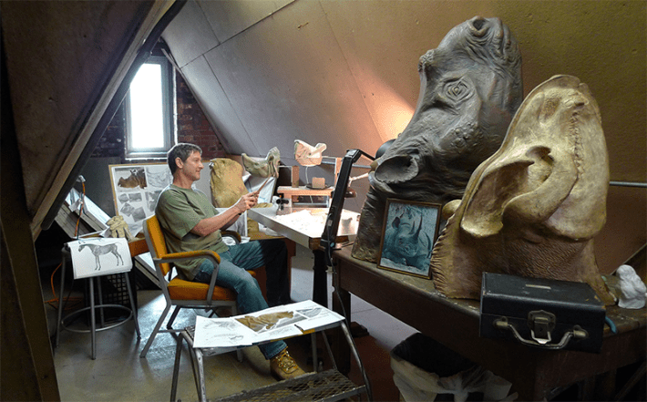
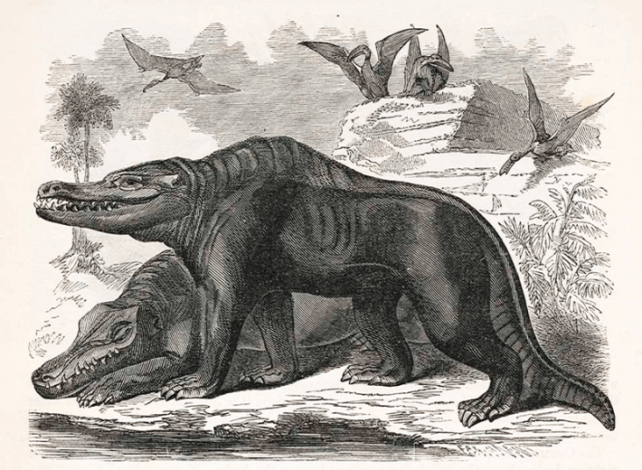
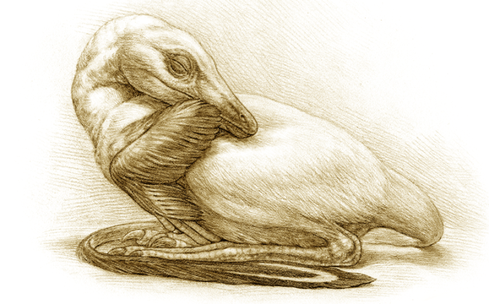
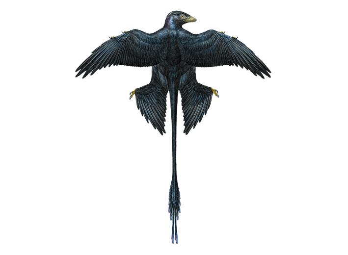

Dinosaurs have always been imaginary creatures. When the world was introduced to these prehistoric animals in 1824, with the description of “Megalosuarus” fossils, natural philosophers relied on the public to imagine what these beasts might have been like. But as other fossil finds followed—Iguanodon in 1825 and Hylaeosaurus in 1832—they began enlisting artists to help transform the bare-bones science into pulsating prehistoric life.
Some of these early efforts were inaccurate at best, comical at worst. But 19th-century artists can be forgiven for their rudimentary recreations, working, as many were, with scant fossil evidence and little exposure to whole branches of the tree of life. Or even the concept of evolution (Charles Darwin’s On the Origin of Species wouldn’t even be published until 1859). As more fossils emerged from the Earth and the field of paleontology blossomed, scientific information about dinosaurs accumulated, making the artists’ job a little easier. Still, though, the cartoonish character of dinosaur reconstructions persisted. Animals were depicted as giant, lumbering lizards with exaggerated chameleon-horned faces, dragging tails, and stocky, hippopotamus-like bodies.
If you look at a lot of dinosaur artwork, they’re always running full speed ahead with their mouths gaping open.
By the turn of the 20th century, the fossil record was expanding, and artists such as Charles R. Knight were incorporating art movements of the day into illustrations of dinosaurs and other extinct organisms. His impressionist backdrops framed detailed paintings of dinosaurs that were more accurate than the creations of his predecessors. For example, in Knight’s 1897 painting Leaping Laelaps, the artist depicts a species of therapod dinosaur now known as Dryptosaurus with features closer than ever to modern reconstructions, even though errors—such as forelimbs with too many digits and skin that was too crocodilian—remained. In another of his works from the same year, Knight deftly renders the recently described Brontosaurus, but places it armpits-deep in a primordial wetland (paleontologists would later determine that the species was not in fact aquatic). Still, his work remains visually iconic and laid the foundations for popular imaginings—lingering inaccuracies and all—of these animals for generations.
And the evolution continues, of course. Contemporary technologies, such as scanning electron microscopy, ancient DNA extraction, and 3-D printing, allow paleontologists to burrow ever further into the fabric of prehistoric life—and scientific illustrators to incorporate those insights into their work.
Nautilus caught up with Mick Ellison, senior principal artist in the division of paleontology at the American Museum of Natural History in New York City. We talked about the past, present, and future of bringing dinosaurs and other extinct creatures to life on the page and in the public imagination.

IN STUDIO:Mick Ellison works surrounded by anatomical inspiration in his attic studio. Courtesy of Mick Ellison.
First, I have to ask: What’s your favorite dinosaur?
I guess it depends on what I’m working on currently. I would say right now my favorite dinosaur is one called Citipati, which is a kind of oviraptor. They’re just fascinating and very odd, very cool.
How has your answer to this question changed in recent years?
I think one of my other favorite dinosaurs is Microraptor, which I also had a chance to work on. And that will always remain one of my favorites. It’s just such an incredible animal.
How did you end up becoming a scientific illustrator—and someone who illustrates extinct animals, of all things?
I knew I would be an artist of some kind since I was very young, but I was always also interested in science. I went to art school in Baltimore. I was taking classes at John’s Hopkins University for medical illustration, but I realized early on that I just didn’t feel like I wanted to pursue that career. I wanted to try other things. So, I kind of drifted away. I wasn’t even aware of scientific illustration.
I would come by the American Museum of Natural History and ask to meet the artists who worked here and try to get to know them and try to get insight into how I could eventually get a job here. It was actually just showing up and asking security guards, “Can you introduce me to an artist that works here?” And it’s funny, it just was chance, I guess. But the security guard actually contacted an artist who worked in paleontology at the time. So that was serendipitous, but it was great because he walked me through the department, even as a stranger, and showed me what these guys do from day to day.

EARLY DINO ART:This 1859 reconstruction of Megalosaurus and Pterodactylus by Samuel Griswold Goodrich, depicts a dinosaur with a decidedly mammalian body. Illustration by Samuel Goodrich / Wikimedia Commons.
Do you have a favorite fine artist?
I have so many. When I was young, I would do children’s books, I would do all kinds of illustration. I was always fascinated with what they call the “Golden Age of American Illustration,” and the artists who were working around the turn of the 20th century.
My favorite is Edmund Dulac. He was a French-British artist who worked mostly in watercolor. His drawings are beautiful. Everyone’s line work around that time was just gorgeous. You would have more graphic things going on like Harry Clark or Aubrey Beardsley, that sort of more stylistic approach.
And I feel like maybe some of that shows through a little bit in my style of the dinosaurs that I do. I always thought if you’re doing a reconstruction, I always like the idea of not only having it be scientifically accurate, but you could also make it artistic as well. There’s no real in-house style. In that way it was very open, and I could use some of the influences that I have from the art world to use in scientific illustration.
As you became familiar with the world of paleoart, were there specific early dinosaur illustrators or paleo artists that you sought to emulate?
Of course there’s Charles Knight. He was a fabulous artist, and his paintings—in the way they were executed, his style, his looseness or his tightness—it just made those paintings masterpieces. And he deserves to be called the father of paleo illustration. His paintings are all over the museum here. I love to look at them. They’re just gorgeous.
I know that he had a deep understanding of nature and animals as well. He would spend weekends going to the Central Park Zoo or the Bronx Zoo and sketching animals. He had a true understanding—I feel like a lot of these early artists did. There was a real emphasis on anatomy. And so all of these artists who were doing work in paleontology would have had a really deep background and training in animal anatomy. And I think that shows through their representation of dinosaurs—it looks like a living animal.
But I discovered Erwin Christman, who was a contemporary of Charles Knight. And he was just an amazing draftsman, an amazing artist, an amazing scientist. The work that he did was just phenomenal. It really inspired me. It still does. He was a master. He could sculpt, he did wonderful, beautiful etchings, line drawings. He could do everything. He was a great painter. Unfortunately, he died very young from appendicitis in the early 1900s. But the amount of work that he produced in his short lifetime was just phenomenal.
From your perspective as a contemporary dinosaur illustrator, how do you think we should view those early, often inaccurate, efforts at reconstructing dinosaurs for the public?
They look dated now from our perspective. But I think at the time they were just using what limited information they and the scientists had. A lot of those may not be accurate anymore, but they’re certainly iconic. And it’s kind of cool to see the progression. Paleontological art is an everchanging field.
I could do a reconstruction today based on all the information we have about a certain fossil, but you’ll never get it completely right. And I know that a few years down the road—and I hope for this—that another fossil will be found that explains it even better. And then I can see where I fell short in the previous one. I know some scientific artists who are constantly updating their old drawings. They’re modifying them to keep them current, and I sometimes will do that too.
How do you see your role as an illustrator bridging the gap between science and the public? I’m wondering if, when you sit down to work, you have an audience in mind? Are you drawing for the kid like you who is interested in dinosaurs? Are you drawing for scientists?
I think primarily I’m doing it for myself, out of curiosity. I don’t really know what it’s going to look like before I start. To me, the whole process is a process of discovery. And I also do it for the scientists. So it’s not like I’m working in isolation. It’s a team effort usually, and I’m often asking a lot of experts. It’s a back-and-forth conversation.
Then it’s thrilling to start to see an animal emerge, to start to see what it may have looked like. It’s always surprising to me.

DINO AT REST:A reconstruction of Mei long, a small, troodontid dinosaur, that Ellison created by studying fossils. Illustration by Mick Ellison.
How, day to day, do you use science and data in your art work?
I was talking about Microraptor—this small, feathered dinosaur from China that has feathers on its hind limbs as well as its forelimbs. It was just remarkable. I remember seeing that fossil for the first time. I was like, “What am I looking at? That is incredible.” I spent many months doing this anatomical reconstruction. At the same time, some of the scientists on the team were working with these things called melanosomes that you can detect through SEM [scanning electron microscopy]. And it will actually give an indication of color. I remember I had just finished the reconstruction. I was considering patterns on the body and the feathers. And when I do that, I start to look at the environment that they were living in. I’m using a lot of things as templates. But then it came in at the 11th hour, and they were like, “We just found out this animal was jet black.” It was iridescent black actually, like a grackle or a crow. And that was just really cool. I had to kind of reshift everything really quickly.
Nowadays we also do a lot of CT [computed tomography] scanning. That enables you to see things that you could never see before. We have preparators that are physically extracting the fossils from whatever matrix they’re in, but a lot of times there’s soft tissue or there’s just things so delicate that they couldn’t be physically prepped. And in the past, you just wouldn’t know they were there. But today, CT scanning is another example where you can see so much more information than you could ever see before. And you can also now have it on your computer. You can be rotating it in three dimensions. And it’s just all opening up more understanding, which is great.
Is there a specific thing about how dinosaurs have been depicted or reconstructed in the past or present that particularly irks you?
It’s probably the same one that we all say. But when I see, in really popular franchises like Jurassic Park, when they depict an animal like a Velociraptor and they have its size wrong and it’s not feathered. A lot of these therapods, or meat-eating dinosaurs—we know now, there’s no debate over it anymore—were feathered. But I think people just want to hang on to whatever icon it was from the past. That is one that irks me.
If you look at a lot of dinosaur artwork, they’re always running full speed ahead with their mouths gaping open, which just seems to be the template that people use when they’re doing a dinosaur illustration. But I like to observe animals. And if you do have predators out there, you don’t really see that kind of behavior exhibited very much. If you talk about living birds, who are the descendants of dinosaurs, they’re not going around with their beaks gaping open all the time.
I’m trying to bring something a little different. And when I think about some of these animals I’m reconstructing, I’m just thinking about what would be a behavior or an action that would be more realistic, that would make more sense.

AS THE DINO-CROW FLIES:Microraptor, as reconstructed by Ellison based on fossil and molecular evidence. Illustration by Mick Ellison.
Can you give me some examples of those more sensible behaviors that you’ve put into your artwork?
I try to do a lot of these dinosaurs in a very still kind of moment. Because if you do look at animals, most of the time, they are contemplating the environment around them. They are being still. I do understand that action poses—if they’re lunging for food or something—are exciting, and I will do that. But I like to do the poses where they’re at rest more, because then I think, as a viewer, you can see that animal in a deeper way. You can look a little longer without being overwhelmed by the energy or the action of the moment.
As a paleo artist, how is AI changing this whole process? Is there something that generative AI misses that human illustrators bring to the table?
Probably AI will replace all of us at some point. But right now, anyway, I’ve tested it out, and I feel secure that I can still bring something to the table that AI can’t quite figure out. If you’re doing an anatomical reconstruction of an animal that lived 200 million years ago, you’re taking from a lot of sources. You’re putting a lot of information into that final drawing, painting, sculpture, whatever it is. And so far, I don’t see AI being able to make all of those subtle, informed connections.
Do you see AI-generated paleo art around, and can you identify it when you see it?
Oh yeah. All the time. And yes, I can pick it out. We get together, my colleagues and I and or my friends and I, and what we notice over the last years, months is that the things that you could obviously pick out, they’re being corrected. So each time it gets a little more refined. And I know eventually it will get to the point where I won’t be able to figure it out. But right now, anyway, I can see it. A lot of AI-generated artwork is terrible. So when it comes to scientific reconstructions, it’s awful.
I like to test it every once in a while. I’m working on projects day-to-day, and I’ll just plug something in. I’m like, “I wonder what AI would come up with for what I’m doing today?” And I just see the results and I’m like, “Okay, okay. Still a ways off.” 
Lead illustration: This 1897 painting of swamp-bound Brontosaurus and land-dwelling Diplodocus is considered a masterpiece from the progenitor of paleoart, Charles R. Knight. Though beautiful, the work is inaccurate—Paleontologists later determined that Brontosaurus was not aquatic, and Diplodocus did not drag its tail behind it. Credit: Charles R. Knight.